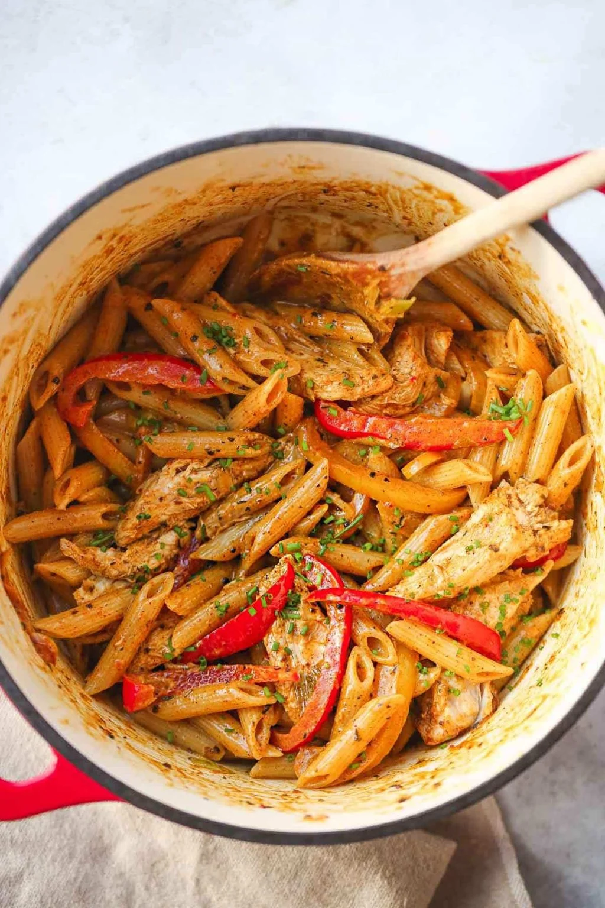

Rasta Pasta

Description
This dish is Jamaican inspired with the 3 colored bell peppers and the
jerk seasoning, it’s a very comforting pasta dish that has all the cream
and cheese that you need to feel good. It also has a strong flavor, and a
lovely spicy kick that will make you want to have this pasta all the time!
Ingredients
- Chicken
- Bell peppers
- Pasta
- Green onions
- Jerk seasoning
- Heavy cream
- Parmesan cheese
- Garlic, oil, and vegetable stock
Steps
-
Cook pasta according to the package instructions, take it out at “al
dente” as you will cook it more in the next steps.
-
I'm using rotisserie chicken in this recipe, but if you are using raw
chicken breast then cube it, toss in jerk seasoning and cook until it's
golden and cooked through. Then remove from the pot, and set aside to
add later.
-
Add vegetable oil to a heavy bottomed pot, and saute bell peppers with
green onions. Add the minced garlic and cook until it’s fragrant.
- Add jerk seasoning to the pot.
-
Add heavy cream, cooked chicken and vegetable stock to the pot. Simmer
for a few minutes or until the sauce thickens, mix in the parmesan in
the sauce and then mix in the pasta.
- Garnish with chopped chives, green onions or parsley and serve.
Home